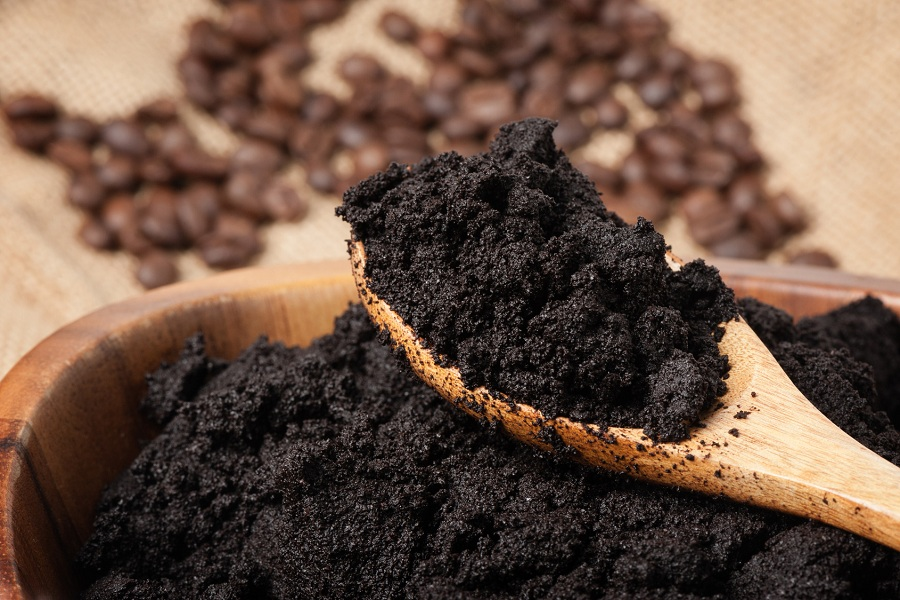

ADUBOS ORGÂNICOS
Já os adubos orgânicos são uma substância benéfica ao crescimento das plantas, por meio de compostagem de uma série de elementos que sofrem decomposição. Ele considera desde resíduos vegetais, como folhas secas, grama, restos de alimentos e esterco animal.

PORQUE MUDAR?
Cada vez mais cresce o movimento pela sustentabilidade integral do produtos feitos em larga escala. Focando em reverter a produção de alimentos com alta taxa de produtos químicos para produtos que não cause danos ao meio ambiente e a natureza. Novas restrições e barreiras vem sendo colocadas em vários países pelo mundo, inclusive no Brasil, onde vem crescendo a migração de produtores de alimentos para o mundo dos adubos orgânicos que são ecologicamente corretos.

BIOPESTICIDAS
Por estarmos em um país tropical, o clima é favorável para o desenvolvimento e a proliferação de insetos e pragas. Atualmente, esses inimigos da agricultura são combatidos em sua maioria com o uso de pesticidas químicos, mas o mercado internacional vem colocando restrições cada vez maiores a produtos tratados com agrotóxicos, principalmente o europeu, no qual a busca por produtos com menos resíduos químicos está em crescimento.
Entretanto, com a preocupação ambiental e a busca por opções mais saudáveis crescendo dia a dia, os pesticidas naturais representam hoje o mercado de proteção de cultivo que mais cresce.